One decision question, one complex retail platform, six steps. Every chart below came from a real run - seed 42, learn-python env, 233,835 rows generated and analyzed.
Everrest is a B2B2C retail platform: 400 merchants and brands sell to 20,000 consumers through one Southeast Asian marketplace. The category team hands over 8 tables and one line of context: "tell us what to act on this quarter." That is all EDA needs to start - the discipline is refusing to write code before understanding what the business would pay to know.
A seeded generator builds all 8 tables - 233,835 rows, identical on every run. Five problems are planted on purpose, because EDA that finds nothing teaches nothing. Each quirk is documented in the generator's docstring, which turns Step 5 into a recall test: did the analysis catch everything we hid?
import numpy as np import pandas as pd SEED = 42 rng = np.random.default_rng(SEED) # Quirk 1: affiliate-channel tracker drops `method` -> nulls concentrate there. p_null = np.where(order_channel == "affiliate", 0.55, 0.035) df.loc[rng.random(len(df)) < p_null, "method"] = np.nan # Quirk 3: retry bug double-fires ~600 March-2026 orders (exact dup rows). march = df[df.order_ts.dt.to_period("M") == "2026-03"] df = pd.concat([df, march.sample(600, random_state=SEED)]) # Quirk 4: weekly cycle (weekend lift) + November promo spike (~2.2x). dow_weight = np.where(days.dayofweek >= 5, 1.45, 1.0) nov_weight = np.where(days.month == 11, 2.2, 1.0)
Framing before code. Not "run describe()" - a question a category lead would actually pay to answer. Every chart in Step 5 must serve one of the five sub-questions; anything else is decoration and gets cut.
Before writing code, Claude scans its installed skills and tools and picks the ones that serve this objective. Reuse beats rebuilding - the point of a skill shelf is that the next analysis starts from here, not from zero.
One-shot profile report: types, missingness, correlations - the 10-minute head start before custom analysis.
Turns the quirks EDA finds into permanent data quality gates - the duplicate bug never ships twice.
Chart form chosen by relationship: trend=line, comparison=bar, distribution=histogram; max 2-3 series colors.
Decision-first scan pattern: rank findings by dollar impact, not by p-value.
One sectioned script, data-quality gate first, business questions on the clean data second. 12 chart types, every PNG rendered at 300 DPI from the actual run, every title a finding rather than a technique. The full script is materials/how-to-eda/eda_everrest_v2.py in the repo.
# Gate 1: exact duplicate order rows (retry bug). dupes = orders_raw[orders_raw.duplicated()] dup_inflation = order_value.reindex(dupes.order_id).sum() orders = orders_raw.drop_duplicates().copy() # Gate 2: cancelled orders carry no revenue. rev_orders = orders[orders.status != "cancelled"] # Missingness BY SEGMENT - this is how missing-not-at-random shows up. null_by_ch = pay.groupby("channel_id").method.apply(lambda s: s.isna().mean() * 100)
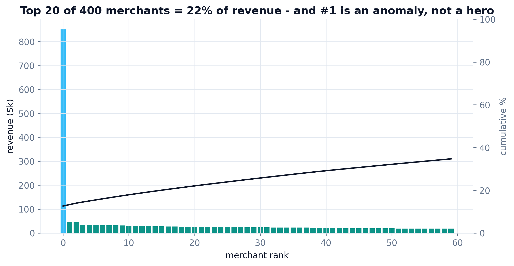
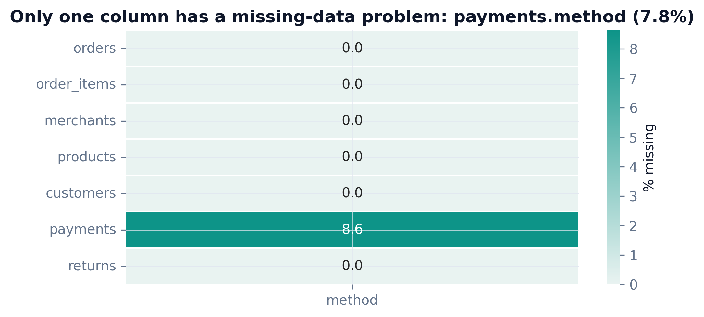
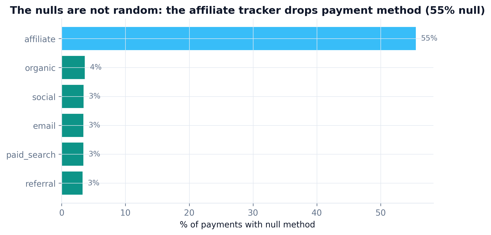
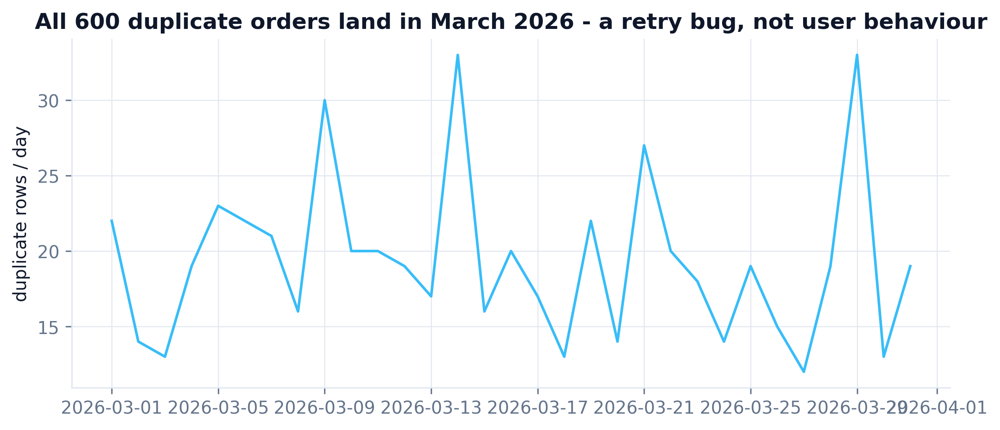
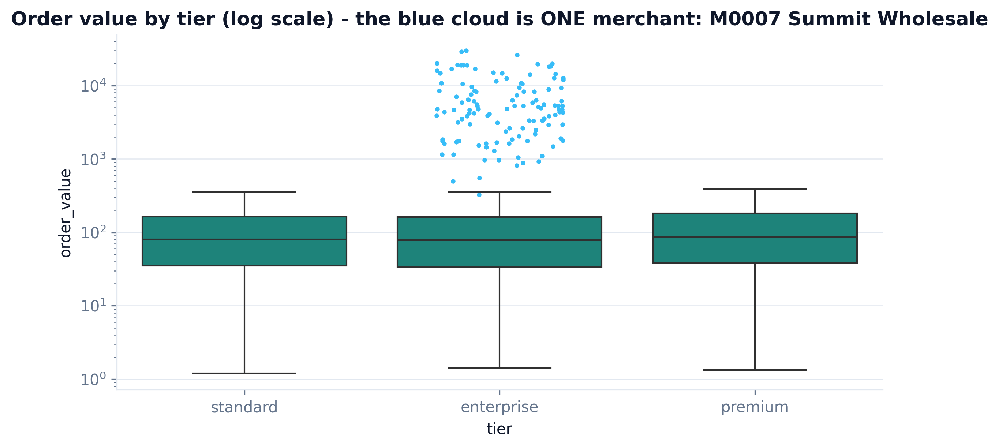
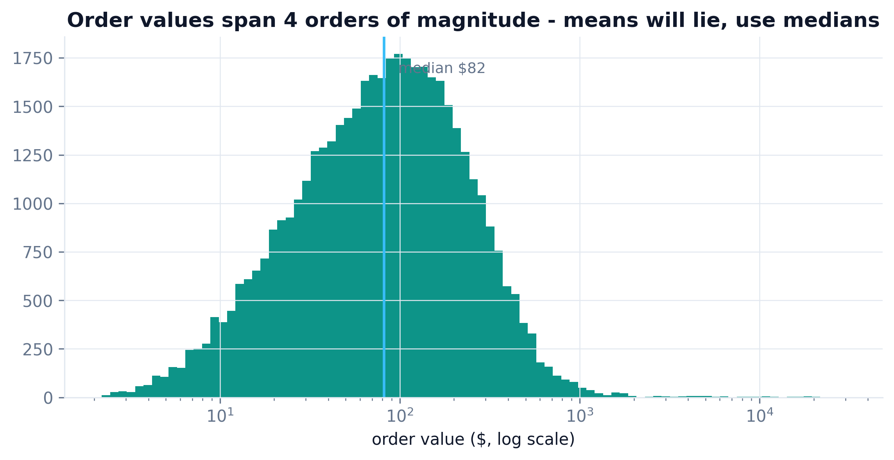
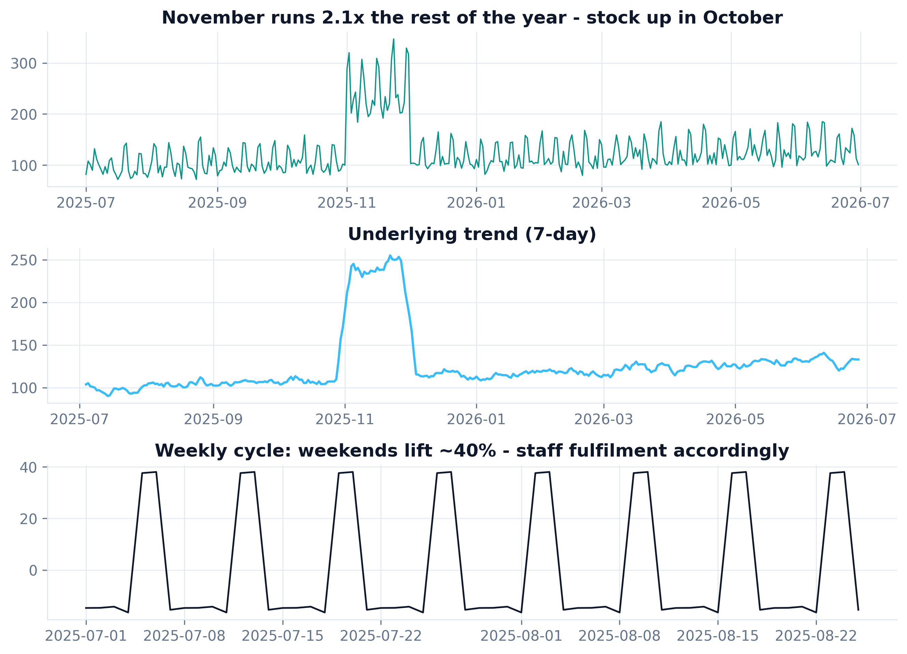
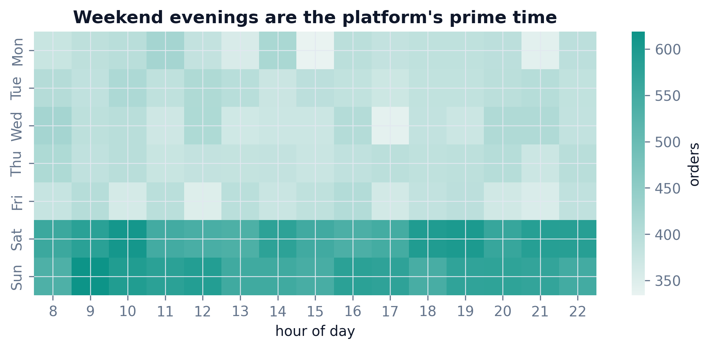
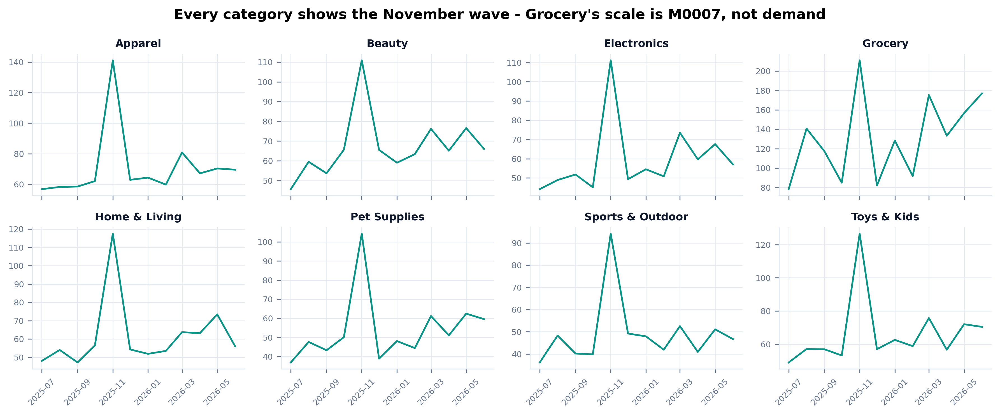
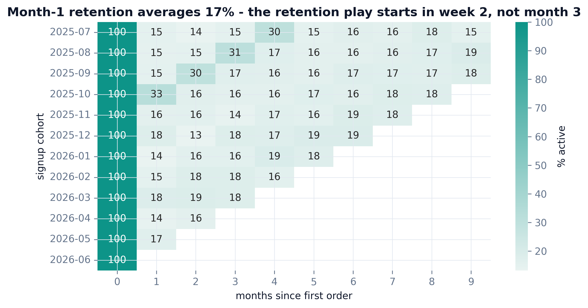
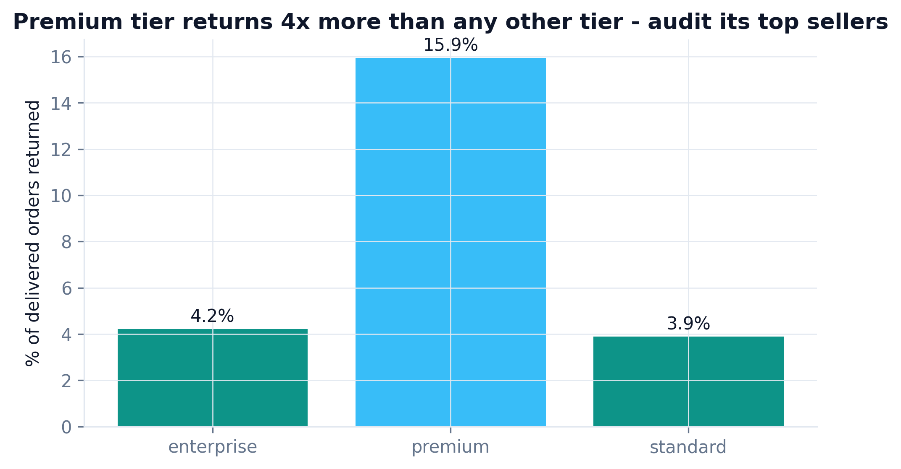
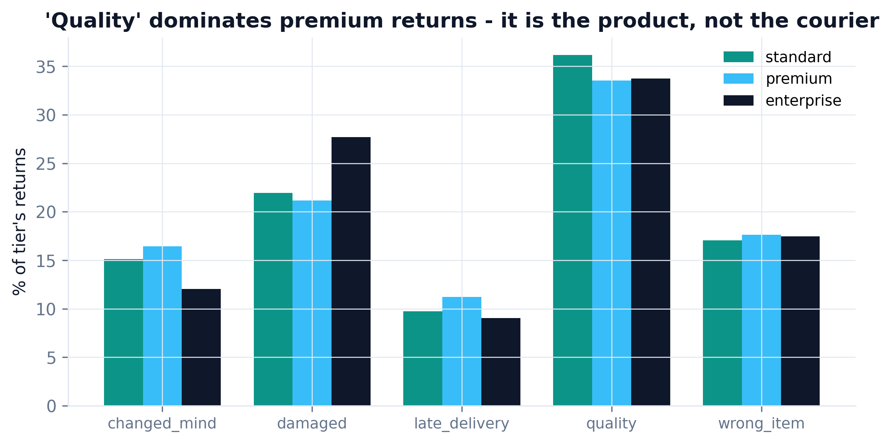
| Planted quirk | Caught by | $ impact | Status |
|---|---|---|---|
| Missing payment methods (MNAR, affiliate) | Missingness by channel | $577,790 unattributable | ✓ caught |
| Outlier merchant M0007 (59x median) | Box plot by tier + pareto | 12.7% of revenue | ✓ caught |
| 600 duplicate order rows | DQ gate + duplicates timeline | $154,559 inflation | ✓ caught |
| Weekend + November seasonality | Seasonal decomposition | $1,016,712 Nov revenue | ✓ caught |
| Premium-tier return cluster | Return rate + reasons by tier | $212,191 returned value | ✓ caught |
| Bonus (not planted): cancelled orders in revenue | DQ gate | $527,072 phantom value | ✓ caught |
Four mentor lenses reviewed the first version of the analysis (eda_everrest_v1.py, kept in the repo). Every fix below was applied and the pipeline re-ran - the charts above are the post-review v2. Review that changes nothing is theater.
"v1 never deduped - 600 duplicate rows are inside every aggregate, and cancelled orders leak $527k into revenue. Gate the data before you touch it."
"Overall missingness (7.8%) looks benign and hides the story. Break missingness down by segment or you will never see missing-not-at-random."
"Half of v1's titles were techniques: 'Correlations', 'Order value distribution'. A chart that doesn't change a decision is decoration."
"Nothing in v1 was quantified. Executives don't rank findings by p-value, they rank by money."
# v1 (before): revenue computed on raw orders - dupes + cancelled included rev = orders.groupby("merchant_id").order_value.sum() # v2 (after): DQ gate first - $681k of phantom value removed orders = orders_raw.drop_duplicates() # -$154,559 rev_orders = orders[orders.status != "cancelled"] # -$527,072 rev = rev_orders.groupby("merchant_id").order_value.sum()
Install once, then hand Claude your tables and business context - the same 6 steps run on your data (step 2 is skipped when real data exists).
git clone https://github.com/phoebefu6/phoebe-data-skills.git ln -s "$PWD/phoebe-data-skills/skills/how-to-eda" ~/.claude/skills/